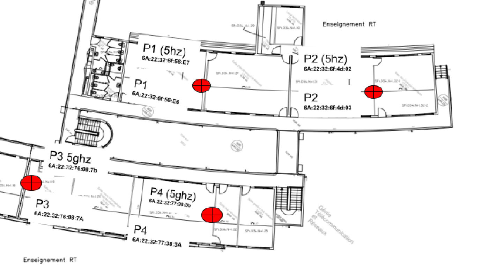
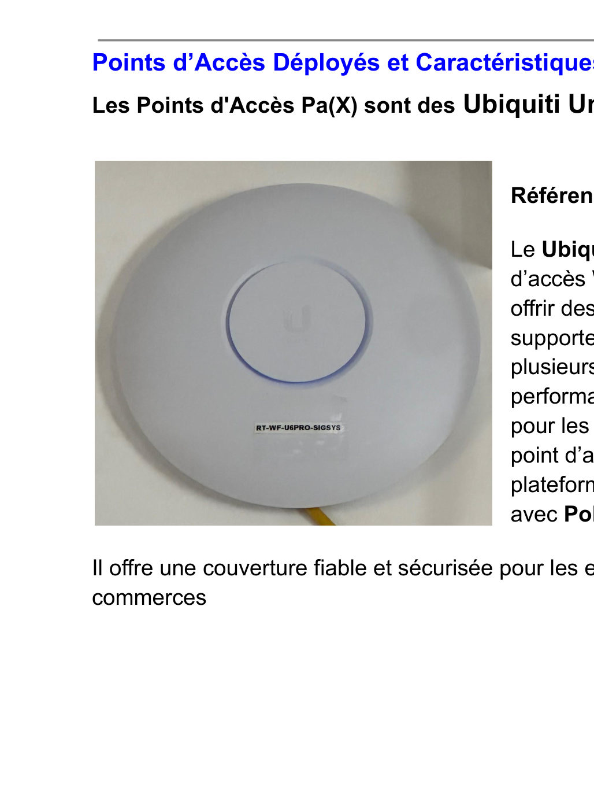
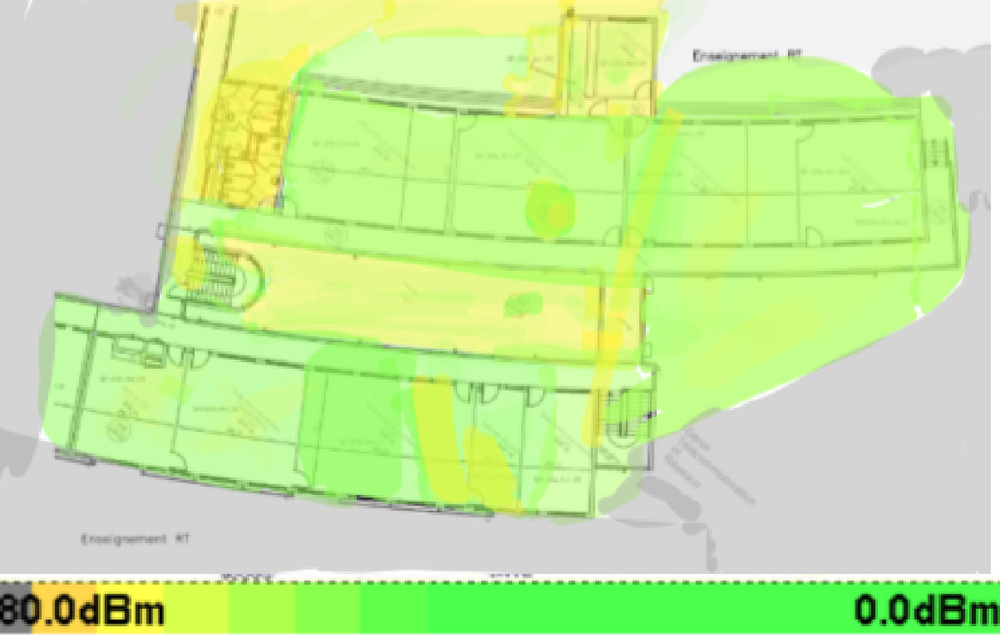
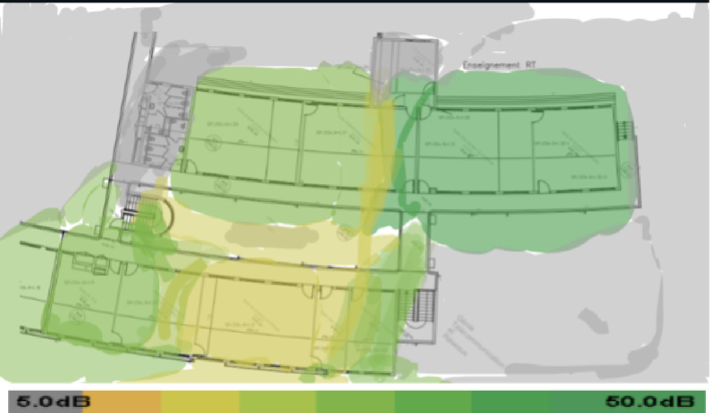
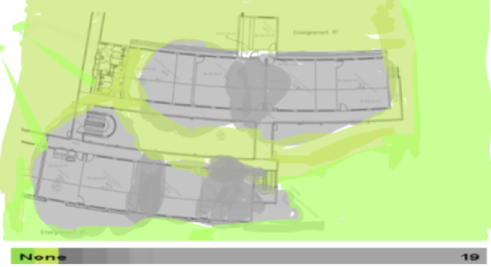
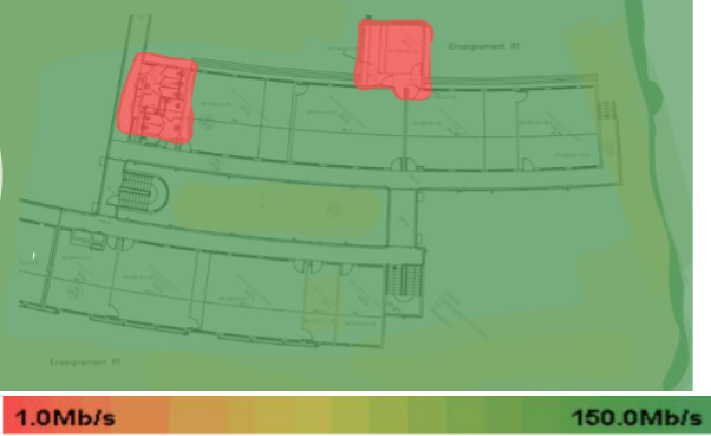
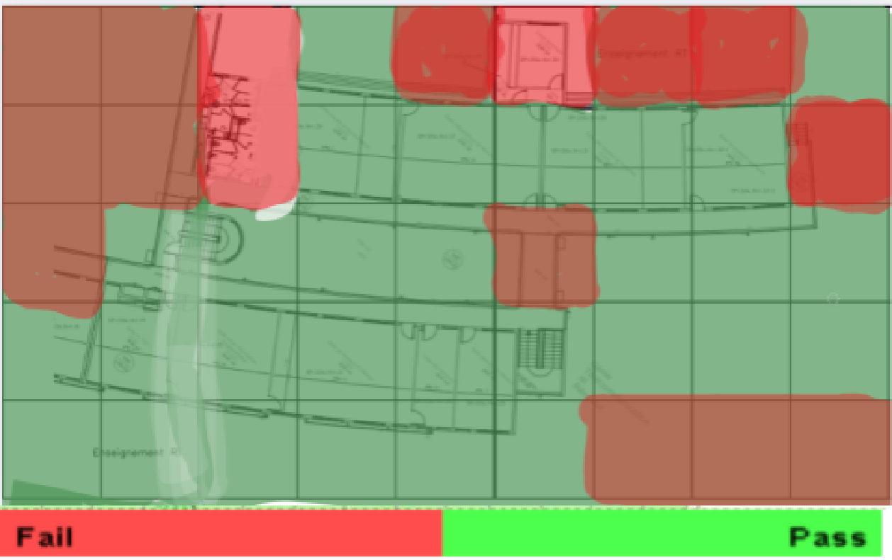

Découvrir un dispositif de transmission : audit de la couverture Wi-Fi
Un rapport d'audit professionnel de la couverture Wi-Fi du département Réseaux & Télécoms de l'IUT de Saint-Pierre, de l'enquête terrain aux recommandations.
Équipe : Binôme maîtrise d'ouvrage : ABDOU Imane et HOUMADI Soirihi · Approbation : M. COMINELLI

Contexte et objectif
Contexte
Le département R&T accueille environ 200 étudiants. Des ralentissements étaient ressentis lorsque de nombreux utilisateurs se connectaient en même temps au réseau RT-WIFI.
Objectif
Évaluer la couverture Wi-Fi des salles RT-Phys-App, RT-Sig-Sys, RT-Elec-Tel, RT-Proj-Doc, RT-TD3, RT-Info-Prog et RT-Res-Câblage, identifier les points faibles et proposer des solutions concrètes.
Ma mission
Mon rôle
Je figure comme vérificatrice (maîtrise d'ouvrage) du rapport, aux côtés de Soirihi HOUMADI. Ensemble, nous avons :
- Rédigé le cahier des charges de l'audit (6 points d'analyse et résultats attendus)
- Localisé les 4 points d'accès et relevé leurs caractéristiques (norme, canal, adresse MAC, SSID)
- Mesuré et interprété puissance, SNR, chevauchement des canaux, débit et santé du réseau sur les deux bandes
- Formulé deux scénarios de recommandations adaptés au budget
Travaux réalisés
Cahier des charges
Définition du périmètre, des 6 indicateurs à analyser et du livrable attendu (cartographie, mesures, recommandations).
Enquête de terrain
Positionnement des points d'accès P1 à P4 sur le plan et inventaire des radios 802.11n et 802.11ac (canaux, MAC, SSID RT-WIFI).
Mesures radio
Cartes de puissance du signal, de rapport signal sur bruit, de chevauchement des canaux et de débit pour 2,4 GHz et 5 GHz.
Santé du réseau
Visualisation « Network Health » selon des critères d'usage mail et Web, pour repérer les zones qui ne répondent pas au besoin.
Conclusions et recommandations
Synthèse des constats et proposition de deux scénarios d'amélioration.
Outils et technologies
Illustrations du projet
Images extraites du rapport. Cliquez pour agrandir.







Difficultés et solutions
Résultats obtenus
- Aucune zone non couverte par le Wi-Fi dans le périmètre audité
- SNR maximal de 49 dB sur 5 GHz, mais un point d'accès plus faible (10,8 dB) identifié
- Saturation constatée en cas de forte affluence et recommandations hiérarchisées par coût
Compétences développées
Compétences
- Mesure et analyse de la propagation radio
- Interprétation d'indicateurs Wi-Fi (puissance, SNR, canaux, débit)
- Rédaction d'un rapport d'audit professionnel
- Conseil et aide à la décision
Ce que ce projet m'a apporté
J'ai appris à transformer des mesures terrain en diagnostic et en recommandations argumentées : une démarche d'audit que je retrouve aujourd'hui dans les études de réseaux.
Envie d'aller plus loin ?
Le document complet détaille toutes les configurations, mesures et analyses.